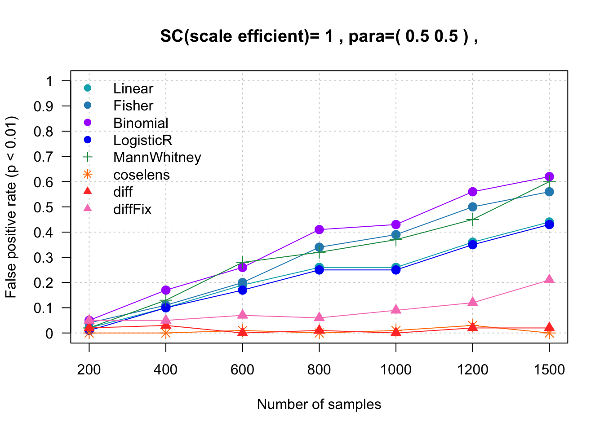

Last updated: 2026-07-21
Checks: 6 1
Knit directory: DiffDriver-PAPER/
This reproducible R Markdown analysis was created with workflowr (version 1.7.1). The Checks tab describes the reproducibility checks that were applied when the results were created. The Past versions tab lists the development history.
The R Markdown file has unstaged changes. To know which version of
the R Markdown file created these results, you’ll want to first commit
it to the Git repo. If you’re still working on the analysis, you can
ignore this warning. When you’re finished, you can run
wflow_publish to commit the R Markdown file and build the
HTML.
Great job! The global environment was empty. Objects defined in the global environment can affect the analysis in your R Markdown file in unknown ways. For reproduciblity it’s best to always run the code in an empty environment.
The command set.seed(20260206) was run prior to running
the code in the R Markdown file. Setting a seed ensures that any results
that rely on randomness, e.g. subsampling or permutations, are
reproducible.
Great job! Recording the operating system, R version, and package versions is critical for reproducibility.
Nice! There were no cached chunks for this analysis, so you can be confident that you successfully produced the results during this run.
Great job! Using relative paths to the files within your workflowr project makes it easier to run your code on other machines.
Great! You are using Git for version control. Tracking code development and connecting the code version to the results is critical for reproducibility.
The results in this page were generated with repository version d7a542c. See the Past versions tab to see a history of the changes made to the R Markdown and HTML files.
Note that you need to be careful to ensure that all relevant files for
the analysis have been committed to Git prior to generating the results
(you can use wflow_publish or
wflow_git_commit). workflowr only checks the R Markdown
file, but you know if there are other scripts or data files that it
depends on. Below is the status of the Git repository when the results
were generated:
Ignored files:
Ignored: .DS_Store
Ignored: .claude/
Ignored: analysis/.Rhistory
Ignored: code/.Rhistory
Ignored: data/.DS_Store
Untracked files:
Untracked: data/sgannosig.Rd
Untracked: data/sgmatrixsig.Rd
Unstaged changes:
Modified: analysis/Simulation-BMR.Rmd
Note that any generated files, e.g. HTML, png, CSS, etc., are not included in this status report because it is ok for generated content to have uncommitted changes.
These are the previous versions of the repository in which changes were
made to the R Markdown (analysis/Simulation-BMR.Rmd) and
HTML (docs/Simulation-BMR.html) files. If you’ve configured
a remote Git repository (see ?wflow_git_remote), click on
the hyperlinks in the table below to view the files as they were in that
past version.
| File | Version | Author | Date | Message |
|---|---|---|---|---|
| Rmd | d7a542c | Siming | 2026-07-17 | Drop diffFix series from the confounding-sim figure |
| Rmd | c7ebe07 | Siming | 2026-07-17 | Add coselens (true per-group BMR) to the confounding-sim benchmark |
| html | d7a542c | Siming | 2026-07-17 | Drop diffFix series from the confounding-sim figure |
| html | c7ebe07 | Siming | 2026-07-17 | Add coselens (true per-group BMR) to the confounding-sim benchmark |
| Rmd | c5e54ee | Siming | 2026-07-11 | Reproduce signature-confounding BMR sim, add Mann-Whitney, clean up simulate_functions.R |
| html | c5e54ee | Siming | 2026-07-11 | Reproduce signature-confounding BMR sim, add Mann-Whitney, clean up simulate_functions.R |
| Rmd | c51072e | Siming | 2026-03-22 | Polish documentation, filter to signature model, and add transformed effect size dot plots |
| html | c51072e | Siming | 2026-03-22 | Polish documentation, filter to signature model, and add transformed effect size dot plots |
| html | 0fd83c1 | Qirui Zhang | 2026-02-12 | Build site. |
| html | e24c6e4 | Qirui Zhang | 2026-02-12 | Build site. |
| html | 9a0bb77 | Qirui Zhang | 2026-02-12 | Build site. |
| html | 24651e6 | Qirui Zhang | 2026-02-12 | Build site. |
| html | 3afaf67 | Qirui Zhang | 2026-02-12 | Build site. |
| html | df72d55 | Qirui Zhang | 2026-02-07 | Build site. |
| Rmd | 3d2e0bb | Qirui Zhang | 2026-02-07 | Initial version of DiffDriver project |
This simulation demonstrates that when the phenotype is correlated with mutational signatures — but not with selection — benchmark methods produce false positives while DiffDriver correctly controls the false positive rate.
bmr = (signatures %*% loadings) / sc, built entirely from
LUAD data — so it is not an arbitrary rate:
signatures (96 × 6) and
per-sample loadings (ll$LUAD) are the real
LUAD mutational signatures and exposures (fastTopics on the LUAD
mutation counts, 527 samples, bootstrapped up to 1,500). The loadings
are a composition (constant column sums = 62.75), so a summed-loading
covariate carries no phenotype information and cannot adjust the
confounding away.sc = 359000 gives a mean
per-site probability of ≈1.8×10⁻⁶ and a genome-wide synonymous
burden of ≈63 mutations per sample (median 62, range 56–73),
matching the observed ≈64 synonymous mutations per
sample in real TCGA-LUAD (530 samples). So both the spectrum
and the overall level are LUAD-realistic.C[T>G]G (nucleotide type 34)
— is selected as the confounding signature.para = c(0.5, 0.5)).Because the phenotype correlates with a mutational signature that affects overall mutation rates, the count-based benchmark methods (Linear regression, Fisher’s exact test, Binomial test, Logistic regression, and the Mann-Whitney rank-sum test) increasingly detect differential selection as sample size grows — all false positives. DiffDriver, which accounts for signature-based background mutation rates, maintains a low false positive rate.
coselens is also included as a “true-background” reference: the phenotype is binarized into two groups and coselens is given each group’s real mutation rate (the group-summed neutral rate per trinucleotide context from the simulation, assuming the rate is the same across samples within a group; see coselens setup). Because it is handed the true confounded background, coselens correctly attributes the case/control mutation excess to background rather than selection and also controls the false positive rate.
The simulation functions live in code/simulate_functions.R
under the “CONFOUNDING scenario” section
(build_confounded_bmr, simulate_confounding,
run_confounding_benchmarks,
run_confounding_diffdriver,
run_confounding_diffdriver_fixed). The benchmark methods
are all in run_confounding_benchmarks
(Linear/Fisher/Binomial/LogisticR + Mann-Whitney); DiffDriver is run by
run_confounding_diffdriver_fixed.
The inputs are bundled in data/bmr_sim_inputs.rda
(beta_gc, beta_gcFix, signature,
ll, sganno, sgmatrix), together
with data/hmm.rda, data/codeSignature.rda, and
data/hotspot1sig.rda (hotspots at nttype 34). A single
sample size is reproduced with:
library(diffdriver); library(data.table); library(Matrix)
source("code/simulate_functions.R")
load("data/bmr_sim_inputs.rda"); load("data/hmm.rda")
load("data/codeSignature.rda"); load("data/hotspot1sig.rda")
set.seed(1)
res_other <- run_confounding_benchmarks(
binary = TRUE, Niter = 100,
sganno = bmr_sim$sganno, sgmatrix = bmr_sim$sgmatrix,
Nsample = 1500, para = c(0.5, 0.5), # no differential selection
rho = sqrt(0.78), # phenotype ~ signature 3, R^2 = 0.78
signatures = bmr_sim$signature, loadings = bmr_sim$ll,
beta_gc = bmr_sim$beta_gc, hot = 1, hmm = hmm,
sc = 359000) # background-rate scale (~188 mutations)
# false-positive rate per method (p < 0.01), no true signal so all are FPs
sapply(res_other[c("m1.pvalue","m2.pvalue","m3.pvalue","m4.pvalue",
"mannwhitney.pvalue")], function(p) mean(p < 0.01))The full benchmark loops this over Nsample = 200 … 1500;
the Mann-Whitney p-values used below were produced this way and saved to
data/pppower_mannwhitney_bmr.Rd. Because the original
scripts/simulate_functions.R (and the exact HMM
coefficients) were lost, the rerun is close to — but not
bit-identical to — the archived runs; the Linear and
Fisher/Binomial/LogisticR curves plotted below are read from the
original archived results.
coselens compares dN/dS between two groups. We binarize the phenotype
into cases (E = 1) and controls (E = 0) and, rather than letting dndscv
estimate the background, feed each group its true
neutral rate from the simulation. Under the assumption that the rate is
the same across samples within a group, a group’s per-context rate is
the group-summed neutral rate
rowSums(bmrfold$bmr[, group]); this 96-context vector is
mapped to dndscv’s 192 substitution contexts via
data/context96_map.rds and passed to
dndscv_truerate (a rate-fixed dndscv).
code/run_coselens.R wraps this; the per-iteration driver
is:
source("code/run_coselens.R"); source("code/dndscv_truerate.R")
library(coselens)
context96_map <- readRDS("data/context96_map.rds")
# `sim` is one cohort returned by simulate_confounding() (same set.seed(1) loop
# as above, so the cohorts are identical to the other methods).
e <- sim$pheno; g1 <- which(e == 1); g2 <- which(e == 0)
maf <- sim_to_maf(sim$mutlist, sim$annodata, e) # case/control MAFs
mr1 <- rowSums(sim$bmrfold$bmr[, g1])[context96_map$number] # 192-context true rate
mr2 <- rowSums(sim$bmrfold$bmr[, g2])[context96_map$number]
res <- run_coselens(maf$group1, maf$group2, subset.genes.by = "ERBB3",
true_rate = list(mutrates1 = mr1, mutrates2 = mr2, theta = 1e6),
gene_list = "ERBB3", cv = NULL)
res$substitutions$pval # differential-selection p-value for ERBB3coselens was run on the same simulated cohorts as
the other methods (verified: per-iteration mutation counts are identical
across all 100 iterations and 7 sample sizes). Its p-values are saved to
data/pppower_coselens_bmr.Rd.
Nsim=100
SIZES <- c(200,400,600,800,1000,1200,1500)
# Mann-Whitney and coselens FPs from the rerun on the SAME simulated cohorts
# (code/simulate_functions.R::run_confounding_benchmarks + code/run_coselens.R).
load("data/pppower_mannwhitney_bmr.Rd") # object `mw`, keyed by sample size
load("data/pppower_coselens_bmr.Rd") # object `coselens`, keyed by sample size
mylist <- list()
for (i1 in c(1)){
for (rho in c(0)) {
for (i4 in c(0.5)) {
n<-0
for(i3 in SIZES){
n <- n+1
load(paste0("data/bmr_archive/diff/pppower_betaf0=",i1, "_sample",i3,"_",i4,"_",rho,".Rd"))
load(paste0("data/bmr_archive/other/pppower_betaf0=",i1,"_sample",i3,"_",i4,"_",rho,".Rd"))
m5.pvalue <- simuresdiff[["m1.pvalue"]]
m1.pvalue <- simuresother[["m1.pvalue"]]
m2.pvalue <- simuresother[["m2.pvalue"]]
m3.pvalue <- simuresother[["m3.pvalue"]]
m4.pvalue <- simuresother[["m4.pvalue"]]
m7.pvalue <- mw[[as.character(i3)]][["mannwhitney.pvalue"]] # Mann-Whitney
m8.pvalue <- coselens[[as.character(i3)]][["coselens.pvalue"]] # coselens (true per-group BMR)
mylist[[n]] <- c(length(m1.pvalue[m1.pvalue <0.01]),length(m2.pvalue[m2.pvalue <0.01]),length(m3.pvalue[m3.pvalue <0.01]), length(m4.pvalue[m4.pvalue <0.01]),length(m7.pvalue[m7.pvalue <0.01]),length(m8.pvalue[m8.pvalue <0.01]),length(m5.pvalue[m5.pvalue <0.01]))/Nsim
}
outdt <- do.call(cbind, mylist)
rownames(outdt)=c("Linear","Fisher","Binomial","LogisticR","MannWhitney","coselens","diffDriver")
colnames(outdt) <- SIZES
# colors: Linear, Fisher, Binomial, LogisticR, MannWhitney, coselens, diff
mycol=c("#00AFBB","#2b8cbe","#aa00ff","#0001f6","#1a9850","#ff7f00","#FF3D2E")
mypch=c(19,19,19,19,3,8,17)
plot(1:dim(outdt)[2],ylim=c(0,1), col="white", ylab = "False positive rate (p < 0.01)", xlab="Number of samples", yaxt="n", xaxt="n")
title( paste( "SC(scale efficient)=",i1,",","para=(",i4,1-i4,")", ",", sep=" "))
yticks_val <- seq(0,1,0.1)
axis(2, at=yticks_val, lab=paste0(yticks_val),las=2)
axis(1, at=1:dim(outdt)[2], lab=colnames(outdt))
grid()
for (r in 1:7){
points(outdt[r,],col=mycol[r], pch=mypch[r], cex=1.3)
lines(outdt[r,],col=mycol[r])
}
legend("topleft", legend = c("Linear","Fisher","Binomial","LogisticR","MannWhitney","coselens","diff"), col= mycol, lwd=1, bty="n", lty=rep(NA,7), pch=mypch)
}
}
}
R version 4.3.2 (2023-10-31)
Platform: aarch64-apple-darwin20 (64-bit)
Running under: macOS Sonoma 14.6.1
Matrix products: default
BLAS: /System/Library/Frameworks/Accelerate.framework/Versions/A/Frameworks/vecLib.framework/Versions/A/libBLAS.dylib
LAPACK: /Library/Frameworks/R.framework/Versions/4.3-arm64/Resources/lib/libRlapack.dylib; LAPACK version 3.11.0
locale:
[1] en_US.UTF-8/en_US.UTF-8/en_US.UTF-8/C/en_US.UTF-8/en_US.UTF-8
time zone: America/New_York
tzcode source: internal
attached base packages:
[1] stats graphics grDevices utils datasets methods base
other attached packages:
[1] workflowr_1.7.1
loaded via a namespace (and not attached):
[1] vctrs_0.6.5 httr_1.4.8 cli_3.6.5 knitr_1.51
[5] rlang_1.1.6 xfun_0.52 stringi_1.8.7 otel_0.2.0
[9] processx_3.8.5 promises_1.5.0 jsonlite_2.0.0 glue_1.8.0
[13] rprojroot_2.0.4 git2r_0.36.2 htmltools_0.5.9 httpuv_1.6.15
[17] ps_1.8.1 sass_0.4.10 rmarkdown_2.29 jquerylib_0.1.4
[21] tibble_3.3.1 evaluate_1.0.5 fastmap_1.2.0 yaml_2.3.12
[25] lifecycle_1.0.5 whisker_0.4.1 stringr_1.6.0 compiler_4.3.2
[29] fs_1.6.6 pkgconfig_2.0.3 Rcpp_1.1.0 rstudioapi_0.17.1
[33] later_1.4.8 digest_0.6.39 R6_2.6.1 pillar_1.11.1
[37] callr_3.7.6 magrittr_2.0.3 bslib_0.10.0 tools_4.3.2
[41] cachem_1.1.0 getPass_0.2-4